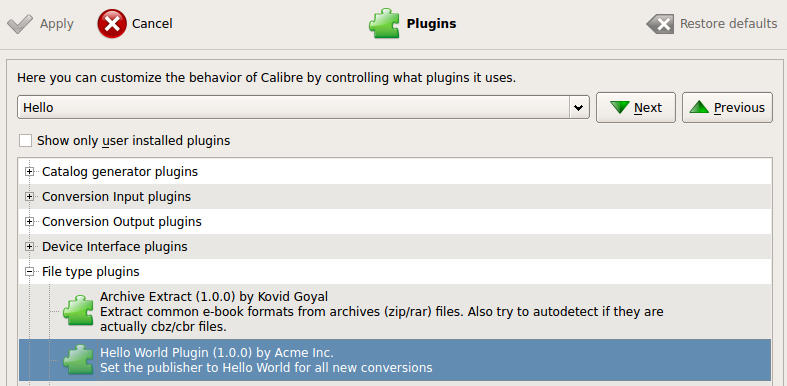
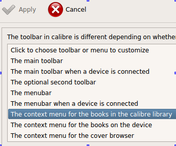

CalibrePluginScaleATon
Table of Contents
1 CalibrePluginScaleATon
A skeleton that "tries" to be a basis for practical calibre plugin creation.
2 memo
github's org-mode renderer will not render this correctly!
2.1 where we are
lsb_release -a
| Distributor ID: | Ubuntu |
| Description: | Ubuntu 12.04.1 LTS |
| Release: | 12.04 |
| Codename: | precise |
calibredb --version
calibredb (calibre 0.9.11)
python -c 'import sys; print sys.version_info'
sys.version_info(major=2, minor=7, micro=3, releaselevel='final', serial=0)
2.2 where we want to go
- add a menu entry to right click that says "Get info"
- when you click it, it prints the dict of the book entry
2.3 version 1
ref: http://manual.calibre-ebook.com/creating_plugins.html
first code in the tutorial involves importing calibre:
import os from calibre.customize import FileTypePlugin
Traceback (most recent call last): File "<stdin>", line 7, in <module> File "<stdin>", line 4, in main ImportError: No module named calibre.customize
So we need to set up calibre as an importable module…
2.3.1 set up our development environment
ref: http://manual.calibre-ebook.com/develop.html
- set up a virtualenv
virtualenv venv
New python executable in venv/bin/python Installing setuptools............done. Installing pip...............done.
- get calibre src for python import
make sure we have a copy of the bazaar code somewhere. skipping this part – you want to follow develop.html linked above.
mine is sitting in
~/dev/calibre/calibre-src; make sure you runbzr mergeto update it.grep -n numeric_version ~/dev/calibre/calibre-src/src/calibre/constants.py
7:numeric_version = (0, 9, 11) 8:__version__ = u'.'.join(map(unicode, numeric_version))
.pthfile hacks for calibre import
cat venv/lib/python2.7/site-packages/calibre.pth
import os, sys; sys.path.append(os.path.expanduser("~/dev/calibre/calibre-src/src")) import os, sys; sys.resources_location = os.path.expanduser("~/dev/calibre/calibre-src/resources") import os, sys; sys.extensions_location = os.path.expanduser("~/dev/calibre/calibre-src/src/calibre/plugins") import sys; sys.executables_location = "/usr/bin"now attempt import calibre
. venv/bin/activate python -c 'import calibre'
Loading ICU failed with: No module named icu Loading ICU failed with: No module named icu
- install
PyICU
. venv/bin/activate pip install PyICUDownloading/unpacking PyICU Running setup.py egg_info for package PyICU Installing collected packages: PyICU Running setup.py install for PyICU building '_icu' extension gcc -pthread -fno-strict-aliasing -DNDEBUG -g -fwrapv -O2 -Wall -Wstrict-prototypes -fPIC -I/usr/include/python2.7 -c numberformat.cpp -o build/temp.linux-x86_64-2.7/numberformat.o -DPYICU_VER="1.5" # ... # # ... # elided # ... # g++ -pthread -shared -Wl,-O1 -Wl,-Bsymbolic-functions -Wl,-Bsymbolic-functions -Wl,-z,relro build/temp.linux-x86_64-2.7/numberformat.o build/temp.linux-x86_64-2.7/format.o build/temp.linux-x86_64-2.7/unicodeset.o build/temp.linux-x86_64-2.7/bases.o build/temp.linux-x86_64-2.7/normalizer.o build/temp.linux-x86_64-2.7/tzinfo.o build/temp.linux-x86_64-2.7/layoutengine.o build/temp.linux-x86_64-2.7/charset.o build/temp.linux-x86_64-2.7/locale.o build/temp.linux-x86_64-2.7/iterators.o build/temp.linux-x86_64-2.7/collator.o build/temp.linux-x86_64-2.7/common.o build/temp.linux-x86_64-2.7/calendar.o build/temp.linux-x86_64-2.7/dateformat.o build/temp.linux-x86_64-2.7/search.o build/temp.linux-x86_64-2.7/_icu.o build/temp.linux-x86_64-2.7/regex.o build/temp.linux-x86_64-2.7/transliterator.o build/temp.linux-x86_64-2.7/errors.o -licui18n -licuuc -licudata -licule -o build/lib.linux-x86_64-2.7/_icu.so Successfully installed PyICU Cleaning up.... venv/bin/activate python -c 'import calibre; print "OK"'
OK
there was actually a problem before, where
src/calibre/utils/icu.pyprinted "icu not ok". I placed aprint _icuafter theif _icu is Nonetest, and the error went away. presumably something was stale and updating it reloaded something else that propagated the fix.
2.3.2 test out our environment
. venv/bin/activate python -c 'import os; from calibre.customize import FileTypePlugin; print "OK"'
OK
2.3.3 test the HelloWorld plugin
mkdir HelloWorldPlugin
(run C-v-t or (org-babel-tangle) to generate this file)
import os from calibre.customize import FileTypePlugin class HelloWorld(FileTypePlugin): name = 'Hello World Plugin' # Name of the plugin description = 'Set the publisher to Hello World for all new conversions' supported_platforms = ['windows', 'osx', 'linux'] # Platforms this plugin will run on author = 'Acme Inc.' # The author of this plugin version = (1, 0, 0) # The version number of this plugin file_types = set(['epub', 'mobi']) # The file types that this plugin will be applied to on_postprocess = True # Run this plugin after conversion is complete minimum_calibre_version = (0, 7, 53) def run(self, path_to_ebook): from calibre.ebooks.metadata.meta import get_metadata, set_metadata file = open(path_to_ebook, 'r+b') ext = os.path.splitext(path_to_ebook)[-1][1:].lower() mi = get_metadata(file, ext) mi.publisher = 'Hello World' set_metadata(file, mi, ext) return path_to_ebook
this file should be runnable from the venv command line (producing no output)
- install the HelloWorld plugin
calibre-customize -b HelloWorldPlugin
Plugin updated: Hello World Plugin (1, 0, 0)
what that did: 
2.3.4 Right-click menu plugin
mkdir MyPlugin
plugin-import-name-myplugin.txt
calibre likes this text file to be empty, but I like to put some install memo in it
calibre-customize -b MyPlugin
Then you can call
sh MyPlugin/*.txtto deploy it locally. For now we'll do this. Later, we might change it to run thezip -rcommand for bundling
__init__.py
from calibre.customize import InterfaceActionBase class MyPlugin(InterfaceActionBase): name = 'Right click plugin' description = 'Create an action menu that appears on right click' supported_platforms = ['windows', 'osx', 'linux'] author = 'Sir Skeleton' version = (0, 0, 1) minimum_calibre_version = (0, 7, 53) actual_plugin = 'calibre_plugins.myplugin.ui:RightClickPlugin' def is_customizable(self): return True def config_widget(self): from calibre_plugins.myplugin.config import ConfigWidget return ConfigWidget() def save_settings(self, config_widget): ''' Save the settings specified by the user with config_widget. :param config_widget: The widget returned by :meth:`config_widget`. ''' config_widget.save_settings() # Apply the changes ac = self.actual_plugin_ if ac is not None: ac.apply_settings()
ui.py
from calibre.gui2.actions import InterfaceAction from calibre.gui2 import question_dialog, info_dialog class RightClickPlugin(InterfaceAction): name = 'Right Click Menu' action_spec = ('Right Click Menu', None, 'Activate the menu', None) # None = no keyboard shortcut action_type = 'current' def genesis(self): # skip the icon creation # icon = get_icons('images/icon.png') # self.qaction.setIcon(icon) self.qaction.triggered.connect(self.show_dialog) def show_dialog(self): # The base plugin object defined in __init__.py base_plugin_object = self.interface_action_base_plugin # Show the config dialog # The config dialog can also be shown from within # Preferences->Plugins, which is why the do_user_config # method is defined on the base plugin class do_user_config = base_plugin_object.do_user_config # self.gui is the main calibre GUI. It acts as the gateway to access # all the elements of the calibre user interface, it should also be the # parent of the dialog # TODO: add book info info_dialog(self.gui, "Item info", str("TODO: add book info"), show=True) def apply_settings(self): from calibre_plugins.myplugin.config import prefs # In an actual non trivial plugin, you would probably need to # do something based on the settings in prefs prefs
config.py
from PyQt4.Qt import QWidget, QHBoxLayout, QLabel, QLineEdit from calibre.utils.config import JSONConfig # You should always prefix your config file name with plugins/, # so as to ensure you dont accidentally clobber a calibre config file prefs = JSONConfig('plugins/myplugin') # Set defaults prefs.defaults['my_msg_header'] = 'Your book info:' class ConfigWidget(QWidget): def __init__(self): QWidget.__init__(self) self.l = QHBoxLayout() self.setLayout(self.l) self.label = QLabel('Message header:') self.l.addWidget(self.label) self.msg = QLineEdit(self) self.msg.setText(prefs['my_msg_header']) self.l.addWidget(self.msg) self.label.setBuddy(self.msg) def save_settings(self): prefs['my_msg_header'] = unicode(self.msg.text())
2.3.5 Actually getting the right click menu to show up
turns out, there isn't an API to create a context menu. You add it via:
- Preferences
- Toolbar
- … books in the calibre library
- 
- and move it to the right pane.
- testing the right click menu
now a right click gives this menu:
with this popup:
next… we need to replace the TODO with the book info.